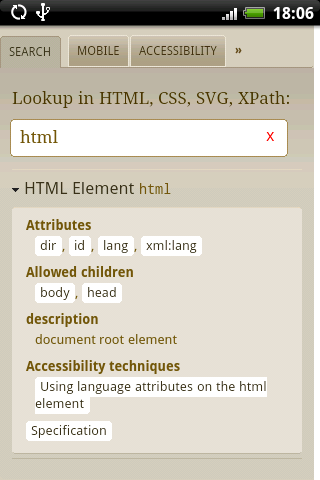

Documentation of the W3C Cheat Sheet on Android
The cheatsheet is an open source project — see also the developer documentation.
It is also available as a pure Web application.
Content of the Cheat Sheet

The cheat sheet allows quick access to:
- the description of the various language tokens (elements, attributes, properties, functions, etc) of HTML, CSS, SVG and XPath, through the text entry box on the Search tab; when you start typing a string, a drop down menu appears, allowing to select a token among those that match what you have typed;
- the summary of the Mobile Web Best Practices, under the “mobile” tab;
- the Web Content Accessibility Guidelines 2.0 at a glance, under the “accessibility” tab;
- the internationalization quicktips under the “I18N” tab;
- and some typography reminders in the “typography” tab.
Getting it on the Android Market

The W3C cheatsheet is available on the Android Market in two versions: for free and as a paid app.
Both versions are identical — the pay-for version simply helps W3C to develop and maintain the tools it makes available freely to the community. We also appreciate direct donations through our Web interface.
To get the application on the Android Market, simply search for “W3C Cheatsheet” there, or use the QR code below:

Versions history
- Version 1.1.3 (Jun 16 2011)
- Updates to HTML5 data, application now installable on SD card
- Version 1.1.2 (Nov 24 2010)
- Minor bug fix: missing data in XPath, updates to HTML5
- Version 1.1.1 (Sep 17 2010)
- Minor bug fix (Removed unneeded phone state permissions)
- Version 1.1.0 (Jul 20 2010)
- HTML5 now included!
- Version 1.0.1 (Jun 22 2010)
- First release on the market
Dominique
Hazaël-Massieux <dom@w3.org>
Last Modified: $Date$